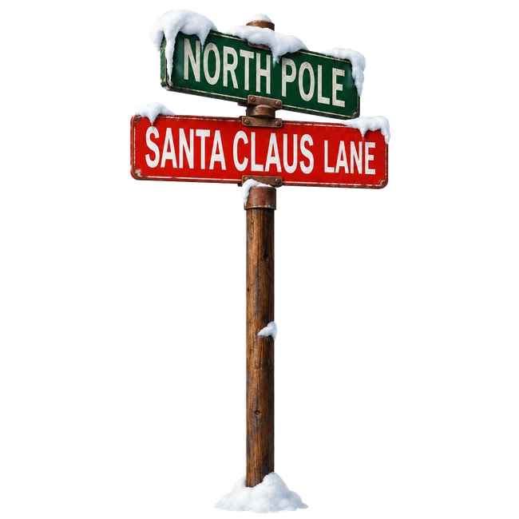
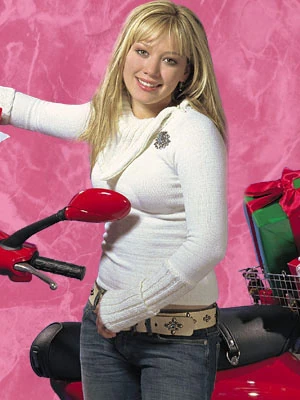
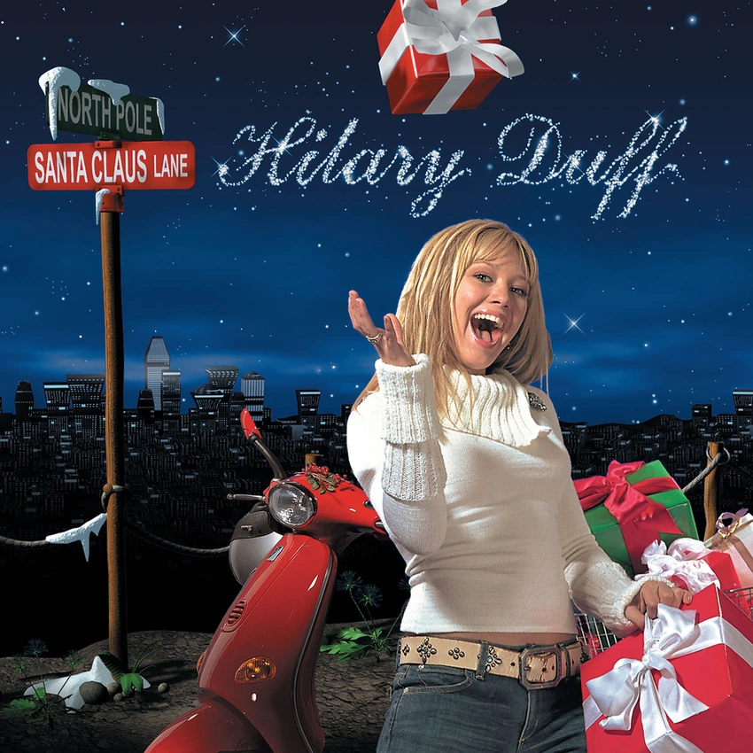

Todo empezó antes de las fiestas.
Antes de Metamorphosis, hubo un disco navideño y una Hilary que ya estaba grabando su propio repertorio. Villancicos, canciones nuevas y colaboraciones que siguen apareciendo cada diciembre.
- LANZAMIENTO
- 2002 · Primer álbum
- EN ESTA VERSIÓN
- 11 canciones · versión disponible en Spotify
- EN REPEAT
- Santa Claus Lane · I Heard Santa on the Radio · Tell Me a Story
DETALLE PARA FANS ✦
Christina Milian aparece en «I Heard Santa on the Radio»; Haylie, en «Same Old Christmas».

EL DISCO
